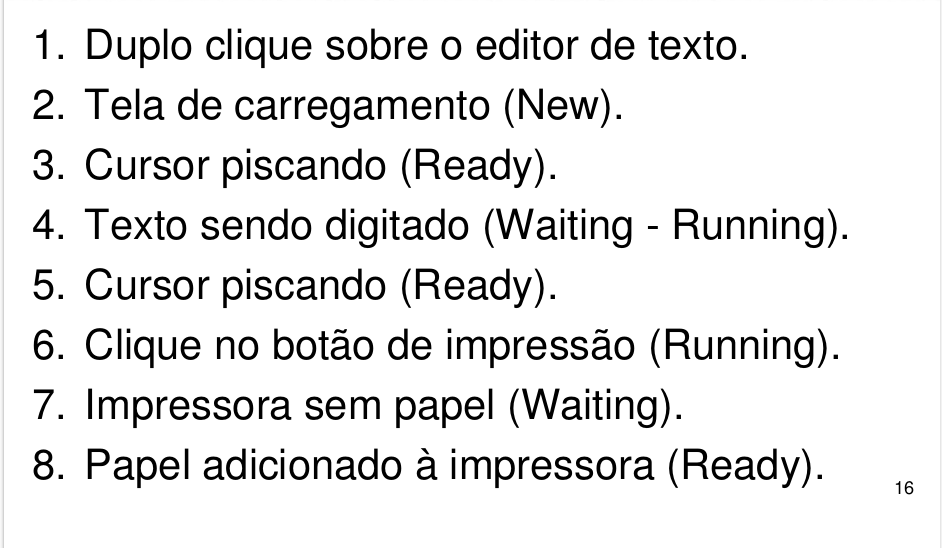

Objetivos de Aprendizagem
- Apresentar definições de processos e as técnicas que o sistema operacional utiliza para garantir rapidez e confiabilidade no que foi solicitado pelo usuário.
- AIdentificar as situações de possíveis conflitos entre processos e como o sistema operacional trabalha com estes impasses.
INTRODUÇÃO
Definição de processos e threads
Caro(a) aluno(a), a partir desta unidade iremos estudar, de forma mais aprofundada, a estrutura de um sistema operacional, que consiste em:

Nesta unidade iremos abordar exclusivamente Gerência do processador/processos e suas definições.
Muitos de nós quando utilizamos os nossos computadores pessoais, gostamos de realizar várias atividades ao mesmo tempo. Podemos citar como exemplo navegar na internet, escutar música e nos corresponder com amigos por meio des redes sociais. Cada um destes itens corresponde a um processo que é gerenciado pelo SO. É a função do SO garantir que os processos sempre funcionem, sem travamentos e sem demora. Além destes processos, um computador pessoal possui vários outros processos que são executados de tempos em tempos como, por exemplo, a atualização do antivírus, que é executada sem intervenção do usuário. A velocidade que este processamento ocorre é tão rápida que temos a falsa sensação que tudo está sendo executado no mesmo momento. Vamos às definições de processos e ao detalhamento de como o SO faz a execução destes processos
Segundo Maziero (2011), a gerência do processador é também conhecida como gerência de processos ou atividades. Onde visa distribuir a capacidade de processamento de forma justa entre as aplicações. Caso não ocorra esta distribuição igualitária, uma aplicação irá monopolizar o uso do processador. Cabe ao sistema operacional gerenciar as múltiplas requisições de processos e coordenar o acesso aos recursos.


PROCESSOS E THREADS
Mas, afinal, o que são os processos?
Um processo pode ser considerado um programa em execução. Por exemplo: imagine que desejamos ler um livro em nosso computador (os chamados e-books). O livro somente poderá ser lido quando ele estiver em execução e para isto é necessário clicar duas vezes sob ele para a sua abertura. Com isto, um processador de texto será aberto. A partir deste momento temos um processo em execução (no caso o processador de texto com o e-book sendo exibido). E como ele entrou em execução?
O sistema operacional estava monitorando o dispositivo de entrada (mouse) e identificou que houve uma instrução de clique duplo sobre um determinado arquivo. O sistema operacional identificou o tipo do arquivo e consultou a lista de programas que poderiam executar e interpretar este arquivo (isto será visto com mais detalhes na unidade de Gerenciamento de Arquivos). Após ter encontrado o programa ideal para executar o arquivo, o sistema operacional solicitou o uso do processador que realizou o processamento, gerando assim um processo, ou seja, um programa em execução.
Como acabamos de ver, um processo precisa de recursos – como tempo de CPU, memória, arquivos e dispositivos de entrada/saída – para executar a sua tarefa. À medida que os processos são criados ou são mantidos em execução estes recursos são alocados ao processo.
Importante termos bem claro em nossa mente qual o tipo de computador o sistema operacional está atuando. Caso ainda exista alguma dúvida, verifique a unidade anterior para maiores esclarecimentos.


Em computadores que executam tarefas em lote (batch), por tradição chamamos os processos de job. Nestes computadores é natural que um único processo permaneça em processamento boa parte do tempo e quando o mesmo for finalizado outro processo entrará em execução.
Mas os computadores pessoais não podem ser assim. Imagine você podendo usar só um programa por vez. Caso todos os computadores pessoais utilizassem sistemas operacionais semelhantes ao de computadores que executam tarefas em lote, seria impossível navegar na internet (processo A) e ouvir música (processo B) ao mesmo tempo. Agora pare e pense, como que o sistema operacional faz este gerenciamento? Até o final desta unidade você estará apto a responder esta pergunta.
Talvez você tenha feito a comparação entre processo e o código-fonte de um programa que você criou e chegou a conclusão que ao executar este código-fonte, você tem um processo. Infelizmente, um processo não pode ser comparado somente ao código-fonte que produzimos. Conforme mostra a figura abaixo percebemos que um processo consiste em quatro grandes áreas:
- Seção de texto: área que contém o código do programa. Também inclui o contador do programa e o conteúdo dos registradores do processador
- Seção de dados: área que contém as variáveis globais.
- Heap: representa o espaço para alocação dinâmica de memória durante a execução do processo.
- Pilha: contém os dados temporários (como parâmetros de função, endereços de retorno e variáveis locais).

Perceba que as áreas heap e pilha podem aumentar de tamanho à medida que o processo é executado.
Quando compilamos um código-fonte e executamos o mesmo, estamos utilizando todas as seções de um processo (texto, dados, heap e pilha). Se um programa não está sendo executado, não temos um processo.

Criação do Processo
Segundo Tanenbaum (2010, p. 52), um processo pode ser criado mediante quatro situações:
- Início do Sistema: quando ligamos o computador e o sistema operacional é iniciado, temos alguns programas que automaticamente entram em execução, dentre eles podemos citar o antivírus
- Requisição de um usuário para criar um novo processo: quando desejamos executar um determinado programa, geralmente clicamos duas vezes sobre ele e o mesmo é executado pelo sistema operacional.
- Criação de processo por um processo em execução:: quando estamos utilizando um processador de texto e desejamos imprimir o que foi produzido, temos um processo (processador de texto) solicitando a criação de um outro processo (gerenciador de impressão).
- Tarefas em lote (batch job): somente utilizada em sistemas de grande porte. O sistema operacional irá executar o processo até finalizá-lo para daí começar a executar outro processo.
TÉRMINO DO PROCESSO
Para Tanenbaum (2010, p. 53) todo processo em execução chega ao fim. Esta ação de término pode ocorrer mediante quatro situações:
- Término normal voluntário: ocorre quando o processo cumpre com êxito a sua finalidade ou então quando o usuário solicita voluntariamente o encerramento do processo (por exemplo, clicando na figura X no canto superior direito, caso o processo esteja sendo executado no Windows).
- Término por erro voluntário: ocorre quando o processo descobre a existência de um erro fatal, e com isto o estado de encerramento é acionado. Por exemplo, no console do Linux, quando tentamos abrir um arquivo que não existe, o processo informa que o arquivo não existe e finaliza as chamadas de abertura de arquivo.
- Erro fatal involuntário: ocorre durante a execução de um processo no momento que uma instrução ilegal ou não planejada/testada é executada. Podemos citar como exemplo, uma calculadora que não teve a operação de divisão por 0 (zero) tratada. Podemos fazer um comparativo com alguns programas que travam em meio ao processamento e emitem mensagens que podem assustar o usuário mais leigo.
- Cancelamento por outro processo involuntário:ocorre quando um processo é finalizado a partir de um determinado programa que possui autoridade para realizar esta finalização. No Linux temos o comando kill e no Windows temos o Finalizar Processo, que pode ser acionado a partir do gerenciador de tarefas, e clicando com o botão direito do mouse em cima do processo. Esta técnica é utilizada quando um determinado programa não responde as solicitações dos dispositivos de entrada (como o teclado e o mouse). O programa parece que congelou e para voltar ao seu funcionamento é necessário finalizá-lo e novamente solicitar a execução do programa, gerando assim um novo processo.
Vale ressaltar que a diferença do encerramento por erro e por erro fatal, consiste no tratamento da exceção de erro por parte de quem desenvolveu o software. Caso a exceção não tenha sido prevista durante o desenvolvimento do software, consideramos como término por erro fatal.

ESTADO DO PROCESSO
Conforme visto nos itens acima, um processo pode ser iniciado e terminado. O sistema operacional sabe se o processo está em execução ou não, por meio da técnica de troca de estados. Silberschatz (2011) define cinco tipos de estados para os processos:
- Novo: : na imagem abaixo é chamado de NEW. Este estado é atribuído ao processo quando uma das quatro ações de criação de processo ocorre.
- Em execução: na imagem abaixo é chamado de RUNNING. É atribuído pelo sistema operacional quando instruções estão sendo executadas.
- Em espera: na imagem abaixo é chamado de WAITING. Ocorre quando um processo aguarda uma resposta externa (por exemplo, de um dispositivo de E/S). Imagine um processo que envia uma instrução à impressão solicitando que um arquivo seja impresso, mas esta impressora está desligada. Até que a impressora seja ligada o processo para imprimir o documento ficará em espera.
- Pronto: na imagem abaixo é chamado de READY. O processo está esperando ser atribuído a um processador. Por exemplo, ocorre quando solicitamos a abertura à calculadora do Windows e logo após o processo ser iniciado, nenhum cálculo é realizado. O processo está pronto para ser usado.
- Concluído: na imagem abaixo é chamado de TERMINATED. O processo terminou sua execução mediante a ocorrência de alguma das quatro situações de término de processo.


Para fixar o entendimento, vamos utilizar a execução do processador de texto Microsoft Word como exemplo de criação, término e estado do processo.
Imaginemos que José é estudante de informática e precisa digitar o trabalho que seu professor solicitou. José possui um computador com sistema operacional Windows. Após iniciar o sistema operacional é apresentada uma interface gráfica com vários ícones. José inicia o programa Microsoft Word a partir do duplo clique do mouse em cima do ícone deste programa (criação de processo por requisição do usuário). Logo após o clique, o cursor do mouse torna-se uma ampulheta e José aguarda para poder digitar o texto (estado do processo NOVO). Logo após a abertura do Word, um cursor fica piscando em uma folha branca (estado do processo PRONTO, após ação admitida ou admited).
Quando José pressiona uma tecla no teclado a letra é exibida no documento de texto. Caso ele pare de digitar o cursor continua piscando aguardando novas letras do teclado. (neste ponto temos a mudança do estado pronto para em execução e quando não há mais nada sendo digitado, o estado volta para pronto. Isto ocorre mediante as ações de despacho do agendador (scheluder dispatch) e interrupção (interrupt)).
Após ter digitado todo o texto, José necessita imprimir o trabalho para entregar ao professor. Ele usa o mouse para clicar na figura de uma impressora. Esta ação faz com que uma nova solicitação de uso da impressora ocorra (criação de processo por um processo já em execução, no caso o Word cria um processo para o gerenciador de impressora). Nesta situação o processo Word passa do estado pronto para em execução, e permanece neste estado até que a impressão fique pronta.
José percebe que a impressão está demorando para ser iniciada e identifica que a impressora está sem papel (neste ponto, o processo Word que estava monitorando a impressão passou de em execução para em espera, por meio da ação espera por evento ou por operação de I/O (I/O or event wait)).
José adiciona o papel na impressora e o processo identifica que já há papel para impressão (mudança de estado de em espera para pronto, mediante a ação conclusão de evento ou de operação de I/O (I/O or event completion)). Logo em seguida, a impressora começa a imprimir o trabalho de José (estado em execução).
José verificou que a impressão está correta (logo após a conclusão da impressão, o estado do processo muda de em execução para pronto) e decide encerrar o Word. Para isto clica no ícone X no canto superior direito do seu monitor (processo muda de pronto para em execução e quando finaliza o encerramento (saída/exit) muda o estado para encerrado e o processo deixa de existir no sistema operacional). A este encerramento chamamos de término normal do processo.
THREADS
Até o momento, tratamos somente de um processo realizando uma única atividade. A atividade de um processo é chamado de thread, ele faz a interpretação do que está sendo digitado no teclado e faz exibição do mesmo no monitor. Caso José quisesse utilizar o corretor de texto enquanto fosse digitando o trabalhão não seria possível.
Pensando nisto, os sistemas operacionais modernos são capazes de trabalhar com processos com múltiplos threads (atividades). Anteriormente, cada ação representava um novo processo (no exemplo acima, o Word seria um processo, o corretor ortográfico seria um segundo processo distinto e o salvar automaticamente a cada 5 minutos seria outro processo).
Em sistemas de processamento em lote (batch jobs) é normal cada processo possuir só um thread, já que o processamento não envolve múltiplas atividades. Chamamos os processos destes computadores de monothread.
Nos computadores domésticos a interação com o usuário é constante e fazse necessário o uso de processos com múltiplos threads. Chamamos os processos destes computadores de multithread.
Chegamos à conclusão que todo processo contém pelo menos um thread e que estes são como mini processos dentro de um processo. O uso de threads permite múltiplas execuções em um processo.


COMUNICAÇÃO ENTRE PROCESSOS
Você já deve ter percebido que os processos de alguma maneira têm que se comunicar com outros processos (Word e gerenciador de impressão no exemplo acima). Cabe ao sistema operacional garantir esta comunicação de forma bem estruturada e sem interrupções.
Caso haja alguma falha na comunicação, existe a possibilidade de concorrência entre os processos ou threads. Se isto ocorrer temos a situação denominada condição de corrida. Nesta situação, diferentes processos ou threads em execução dependem de um estado compartilhado e o resultado desta execução depende do escalonamento de processo (assunto que será abordado logo em seguida).
Imaginemos que dois processos distintos estão solicitando o uso de um determinado arquivo ao mesmo tempo. O resultado desta disputa (condição de corrida) será uma catastrófica corrupção dos dados do arquivo.
Mas como evitar estas condições de disputa entre os processos e threads? Todo processo precisa de um espaço em memória durante a sua execução e um pedaço desta memória é compartilhado entre outros processos. Este compartilhamento é chamado de região crítica. A melhor maneira para que não ocorra condição de corrida é realizando a exclusão mútua. Nesta técnica os processos são impedidos de acessar uma variável ou arquivo compartilhado na região crítica e que já esteja em uso por outro processo.
Tanenbaum (2010, p. 71) define que uma boa solução de exclusão mútua deve atender os seguintes critérios:
- Dois processos nunca podem estar simultaneamente em suas regiões críticas.
- Nada pode ser afirmado sobre a velocidade ou sobre o número de CPUs
- Nenhum processo executando fora de sua região crítica pode bloquear outros processos.
- Nenhum processo deve esperar eternamente para entrar em sua região crítica.
Iremos estudar uma série de técnicas que foram desenvolvidas para que o sistema operacional pudesse gerenciar corretamente a comunicação entre os processos. Iremos começar das mais simples para as mais complexas.
DESABILITAR INTERRUPÇÕES
Para que um processo seja executado na CPU, o sistema operacional emite um sinal de interrupção. O objetivo desta abordagem é impedir o uso de CPU por outro processo até que o processamento fosse concluído. Quando o processo estivesse utilizando a região crítica, eram desabilitadas as chamadas de interrupções e ao fim do processamento, as interrupções eram habilitadas.
Esta abordagem não é interessante, pois um processo do usuário poderia ter mais prioridade que um processo que o sistema operacional criou. Além disto, esta abordagem só funciona quando o computador possui uma única CPU.

